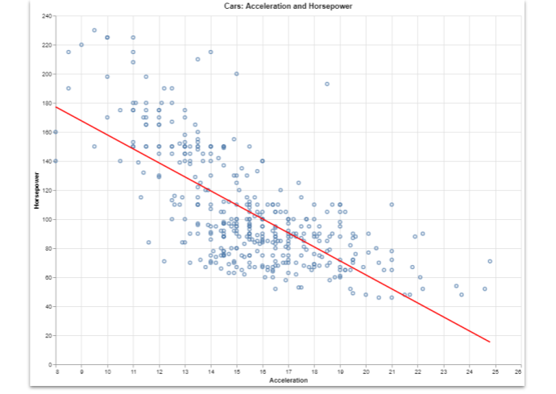

Your Beautiful Altair Graphics on a Simple Web Page
Altair has a native method to create basic web pages but with a little more effort, web templates get you a much better result
Sometimes a simple web page is all you need to convey a compelling data visualisation message. So, I'm going to give you a short Python function that will build a web page from any Altair graphic and any web template.
This won't take long.
When you create a graphic in Altair, it creates an intermediate JSON representation of the graph that can be interpreted by a Javascript library. So, create your stunning chart in Python, export it to JSON and then pop that JSON into a web page and you're done.
Easy!
But wouldn't it be great if we had a nice Python function to do that for us? That's what is coming up!
Build a graph
CODE FOR CHARTS + IMAGE OF CHARTS
We are going to build a scatter chart with a trend line like the one below.
And, to keep things simple, we'll use the 'cars' dataset from the vega_datasets library.
This for convenience and demonstration purposes but, of course, you would import your own data to create your particular web page.
The image below shows you what the cars data looks like.

It's basically data about a bunch of old cars that look something like this:
.jpg)
That is a 1965 Chevrolet Impala Sport Coupe photographed at the June 19th, 2023 Cruisin' the River Lowellville Car Show in Lowellville, Ohio by # MercurySable99 and the image is licensed CC BY-SA 4.0. The car is finished in Glacier Gray - and it occurs to me that this might be more than you actually wanted to know. Sorry, I'll get on with the code.
Two of the data records are about how powerful each car is (the 'horsepower') and the rate at which they accelerate (the number of seconds to get from one speed to a higher one).
As a complete aside, it seems quite weird that, even in the 20th century, you measured the power of a car as an equivalent number of horses. And, as for the acceleration... is it 0 to 60 miles per hour like it was in the UK when I was young and interested in this sort of thing? Maybe - it doesn't seem to be recorded but it doesn't really matter it's basically: how fast is this car!
Yeah, yeah, I know, the code! You can see the code that implements this chart, below - it's not very tricky.
# Display cars data
import altair as alt
from vega_datasets import data
cars = data.cars()
scatter_plot = alt.Chart(cars).mark_point().encode(
alt.X('Acceleration:Q').scale(zero=False),
y='Horsepower:Q'
).properties(height=600, width=800, title = "Cars: Acceleration and Horsepower" )
trend = scatter_plot.transform_regression('Acceleration', 'Horsepower').mark_line(color='red')
chart = scatter_plot + trend
We import the libraries, load the data into a Pandas dataframe, construct a scatter plot, construct a trend line, and finally, put the two together into a single plot.
If you put this code into a Jupyter Notebook or a Streamlit app then it can easily be displayed.
But if you want to create a web page...
Native functions
Altair has a function that will create an HTML web page automatically for you. However, the result is pretty basic. Add the following code and you'll get a simple HTML page that looks just like the graph image we saw earlier. And that's fine but it's just a graph; no explanation or comment, just the graph.
# Save as HTML with native method
with open('page.html', 'w') as f:
f.write(chart.to_html())
You could embed this into an existing web page using HTML iframes but that is a bit messy and the alternative is as straightforward.
There is a simple alternative that is better.
Write a template
Let's see how we can improve on the native function by using a simple web template and a general-purpose function to fill that template wih chart data and supporting text.
We aim to produce a page that looks like the image below.
You can see that as well as the chart there is a header and a textual description.
Here is the Python code that will produce the chart - it's essentially similar to the one we saw previously but it also defines the textual content of he page. That text is defined as a set parameters along with a JSON version of the chart (produced by the built-in function .tojson().
import altair as alt
from vega_datasets import data
import deployaltair
cars = data.cars()
scatter_plot = alt.Chart(cars).mark_point().encode(
alt.X('Acceleration:Q').scale(zero=False),
y='Horsepower:Q'
).properties(height=600, width=800, title = "Cars: Acceleration and Horsepower" )
trend = scatter_plot.transform_regression('Acceleration', 'Horsepower').mark_line(color='red')
chart = scatter_plot + trend
params = {'title':'Deploy Altair Chart as a web page',
'subtitle':'Example of how to deploy an Altair chart to a custom HTML template',
'description':"""
Below is a scatter diagram with a regression line that explores the relationship between
accleration an horsepower in the datasets 'cars' from vega datasets.
""",
'spec':chart.to_json(indent=None)
}
deployaltair.deploy('./page.html', './bs-simple.html', params)
The last line of code calls a library function that takes an HTML template file and creates the final HTML page from it and the parameters that we set.
This library function can be used with any HTML template, with an arbitrary number of parameters. It works using the jinjatemplating library in much the same way as a Flask application.
import altair as alt
from jinja2 import Template
def deploy(targetfile, templatefile, data):
# add default vega values to data
data['vega_version'] = alt.VEGA_VERSION
data['vegalite_version']=alt.VEGALITE_VERSION
data['vegaembed_version']=alt.VEGAEMBED_VERSION
# get the template and render with the data
with open(templatefile,'r') as f:
template = f.read()
j2_template = Template(template)
t = j2_template.render(data)
# write the final html
with open(targetfile, 'w') as f:
f.write(t)
Also, as you can see, this functions derive some other parameters from the Altair library which are required for the HTML page.
The HTML template is shown below. It is a simple page although, as it uses the Bootstrap UI library, it looks a tiny bit more complex than if it were plain simple HTML. This could be stripped out but it would result in a much less attractive webpage.
<!DOCTYPE html>
<html>
<head>
<meta charset="UTF-8">
<meta name="viewport" content="width=device-width, initial-scale=1.0">
<link href="https://cdn.jsdelivr.net/npm/bootstrap@5.0.2/dist/css/bootstrap.min.css" rel="stylesheet"
integrity="sha384-EVSTQN3/azprG1Anm3QDgpJLIm9Nao0Yz1ztcQTwFspd3yD65VohhpuuCOmLASjC" crossorigin="anonymous">
<script src="https://cdn.jsdelivr.net/npm/vega@{{vega_version}}"></script>
<script src="https://cdn.jsdelivr.net/npm/vega-lite@{{vegalite_version}}"></script>
<script src="https://cdn.jsdelivr.net/npm/vega-embed@{{vegaembed_version}}"></script>
</head>
<body class="container">
<header class="bg-primary text-white text-center py-8">
<h1 class="display-4">{{title}}</h1>
<p class="lead">{{subtitle}}</p>
</header>
<div>{{description}}</div>
<div class = "p-5" style="width:80%" id="vis1"></div>
<script type="text/javascript">
vegaEmbed('#vis1', {{ spec | safe}}).catch(console.error);
</script>
<script src="https://cdn.jsdelivr.net/npm/bootstrap@5.0.2/dist/js/bootstrap.bundle.min.js"
integrity="sha384-MrcW6ZMFYlzcLA8Nl+NtUVF0sA7MsXsP1UyJoMp4YLEuNSfAP+JcXn/tWtIaxVXM"
crossorigin="anonymous"></script>
</body>
</html>
You can see where the parameter vaules will be located: they are named as in the paramter list we saw in the Python and enclosed in curlly braces, e.g. {title}. The extra keyword, safe, is used with the specparameter as this will contain the JSON code. safe signals to the template engine that the value may contain special characters but that is ok and they should not be translated in any way (e.g. converting >into the >character).
To run the code simply put all three files into a single directory and run the main Python program. The result is a new webpage (named page.html) that can be deployed (often for free) to a static web site like GitHub pages.
Conclusion
Templating is a powerful tool for creating webpages. And I hope that you can see that a different web page (although structurally the same) could be created simply by giving the paramters different values. Furthermore, a completely different page could be created by using another template with different paramters - the library function would no need to be changed.
I hope that this has given you food for thought and that you might use this technique in publishing your data visualisations on the web.
Thanks for reading and if this type of article is interesting, please take a look at my webpage and/or subscribe to my free, occasional newsletter where I publicise my work.
You can find the code for this article here.